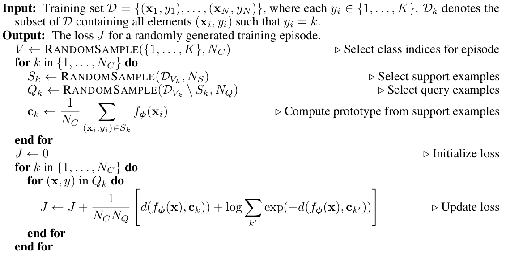

当机器学习遇上小样本：Few-shot Learning
引言
深度学习(deep learning)已经广泛应用于各个领域，解决各类问题，例如在图像分类问题下，如图1，区分这10类目标的准确率目前可以轻松做到94%。然而，deep learning是一种data hungry的技术，需要大量的标注样本才能发挥作用。
图1
现实世界中，有很多问题是没有这么多的标注数据的，获取标注数据的成本也非常大，例如在医疗领域、安全领域等。因此，我们现在讨论的是这样一个问题的场景，也就是小样本问题。它面临的问题是:
- 训练过程中有从未见过的新类，只能借助每类少数几个标注样本;
- 不改变已经训练好的模型。
还是用10类图像分类数据为例，传统的方法是基于左边这些训练集，获得模型，然后对右边测试集进行自动标注。而小样本问题如图2所示，我们大量拥有的是上方这5类的数据，而新问题（下方这5类）是只有很少的标注数据。
图2
当标注数据量比较少时，怎么学习出好的特征？我们需要泛化这些罕见的类别，而不需要额外的训练，因为训练会因为数据少、代价高、周期长而无法获得收益。下面介绍近几年几种解决小样本问题的方法，我们将这些方法称为fewshot learning（如果只有一个标注样本，称oneshot learning）。
基于Finetune
这种方法已被广泛地应用。获得一定量的标注数据，然后基于一个基础网络进行微调。这个基础网络是通过含有丰富标签的大规模数据集获得的，比如imagenet，我们的淘宝电商数据，称为通用数据域。然后在特定数据域上进行训练。训练时，会固定基础网络部分的参数，对领域特定的网络参数进行训练（这里有很多训练的trick，包括如何设置固定层和学习率等），如图3。这个方法可以相对较快，依赖数据量也不必太多，效果还行。
基于metric
该方法是对样本间距离分布进行建模，使得属于同类样本靠近，异类样本远离。简单地，我们可以采用无参估计的方法，如KNN。KNN虽然不需要训练，但效果依赖距离度量的选取, 一般采用的是一个比较随意的距离计算（L2）。另一种，也是目前比较好的方法，即通过学习一个端到端的最近邻分类器，它同时受益于带参数和无参数的优点，使得不但能快速的学习到新的样本，而且能对已知样本有很好的泛化性。下面介绍3个相关的方法。
孪生网络 （Siamese Neural Networks）[1]
这个方法对输入的结构进行限制并自动发现可以从新样本上泛化的特征。通过一个有监督的基于孪生网络的度量学习来训练，然后重用那个网络所提取的特征进行one/few-shot学习。
它是一个双路的神经网络，训练时，通过组合不同类的样本成对，同时输入网络进行训练，在最上层通过一个距离的交叉熵进行loss的计算，如图4。在预测的时候，以5way-5shot为例，从5个类中随机抽取5个样本，把这个mini-batch=25的数据输入网络，最后获得25个值，取分数最高对应的类别作为预测结果，如图5。
图4
图5
网络结构如图6所示，是一个8层深度卷积孪生网络，图中只展示了其中一路计算，在网络的4096维的全连接层后执行component-wise 的L1距离计算，产生一个4096维的特征向量，并通过sigmoidal激活获得一个0到1的概率作为两个输入样本是否相似的结果。

图6
匹配网络（matching networks）[2]
这篇文章的工作被李飞飞高徒karpath点赞过，成为之后相关研究中经常被对比的参照。该文章也是在不改变网络模型的前提下能对未知类别生成标签，其主要创新体现在建模过程和训练过程上。对于建模过程的创新，文章提出了基于memory和attantion的matching nets，使得可以快速学习。对于训练过程的创新，文章基于传统机器学习的一个原则，即训练和测试是要在同样条件下进行的，提出在训练的时候不断地让网络只看每一类的少量样本，这将和测试的过程是一致的。
具体地，它尝试获得一个从支持集S(support set， 由k个样本及其标签组成)到分类器y^的一个映射，该映射是一个网络:P(y^|x^,S)，它基于当前的S，对每个未见过的测试样本x^给出其标签y^，该标签让P达到最大值。这个模型可以表示为如公式1)，其中a是一个attetion。
， (公式1）
即一个新样本的输出（即在S上类别的分布）是S上的类attation线性组合，也就是对于离x^最远的xi，其在某度量下的attation是0， 那么其值就是和x^相似的xi所对应标签的权重融合。
上述的attention具体是，对训练样本xi和测试样本x^分别进行embedding，然后求内积(cosine)，这就是文章提出的"matching"，然后输入到一个softmax中，公式如公式2），其中c是cosine距离。其中两个embedding的模型是share的，比如用CNN。这个a是和度量学习（metric learning）相关的，对于待分类的样本x, 让其和那些标签为y的样本对齐，和其它的不对齐，这种loss其实就是和NCA，triplet loss和margin nearest neighbor相关的。
(公式2)
进一步，支持集样本embedding模型g能继续优化，并且支持集样本应该可以用来修改测试样本的embedding模型f。这个可以通过如下两个方面来解决：即1）基于双向LSTM学习训练集的embedding，使得每个训练样本的embedding是其它训练样本的函数；2）基于attention-LSTM来对测试样本embedding，使得每个测试样本的embeding是训练集embedding的函数。文章称其为FCE(fully-conditional embedding)。
关于g 的优化。上述虽然是在整个支持集样本上做分类，但用来做cosine距离计算的embedding 的获得是互相独立的，因此文章把对支持集样本的embedding改为g(xi, S)， 这当比如xj十分接近xi时改变g函数是有用的。文章用了双向LSTM，即把S看成一个序列（文章并没有提到这个序列的顺序是怎么生成的，也许是随机的），然后对每个xi进行编码。具体公式如下，其中g'(xi)是原始只依赖自己的embedding，xi通过BiLSTM进行信息互通。
, , (公式3)
关于f的优化。支持集样本可以用来修改测试样本的embedding模型。这个可以通过一个固定步数的LSTM和对支持集的attention模型来解决, 即如下公式，其中f'(x)是只依赖测试样本自己的特征，作为LSTM的输入（每步不变），K是LSTM的步数，g(S)是支持集的embedding。由此，模型会忽略支持集S中的一些样本。
(公式4)
这两个embedding函数f和g是对特征空间进行了优化，从而让精度提升。
关于训练策略。文章对imagenet进行的采样，制作了3种适合做one/few shot的数据集，其中miniImageNet，它包含100类，每类600张图片，其中80个类用来训练，20类用来测试， 称为后续相关研究经常被采用的数据集。以5-way 5-shot为例。训练时，在80类中随机采样5个类，然后把这5类中的数据分成支持集S和测试B，训练matching net模型来使得在S条件下的B的预测结果误差最小。测试时，在20个未被训练过的类中抽取5类，每类5张图，作为测试支持集S’。如图7，MatchNet方法相对原始的Inception模型能正确识别模型从未见过的轮胎和自行车。
图7
原型网络 （Prototypical Networks）[3]
该方法思想十分简单高效，效果也非常好。它学习一个度量空间， 通过计算和每个类别的原型表达的距离来进行分类。文章基于这样的想法：每个类别都存在一个聚在某单个原型表达周围的embedding，该类的原型是support set在embedding空间中的均值。然后，分类问题变成在embedding空间中的最近邻。如图8，c1、c2、c3分别是三个类别的均值中心（称Prototype），将测试样本x进行embedding后，与这3个中心进行距离计算，从而获得x的类别。
图8
其伪代码也十分清晰：

文章采用在Bregman散度下的指数族分布的混合密度估计，实验表明squared Euclidean距离比cosine距离要好14到17个点。另外，文章在训练时采用相对测试时更多的类别数，即训练时每个episodes采用20个类(20 way)，而测试对在5个类（5 way）中进行，其效果相对训练时也采用5 way的提升了2.5个点。
基于graph neural network
这是一篇比较新的文章，提交到ICLR 2018[4]。他定义了一个图神经网络框架，端到端地学习消息传递的“关系”型任务。在这里，每个样本看成图的节点，该方法不仅学习节点的embedding，也学习边的embedding。如图9，在网络第一层5个样本通过边模型A～构建了图，接着通过图卷积（graph conv）获得了节点的embedding，然后在后面的几层继续用A～更新图、用graph conv更新节点embedding, 这样便构成了一个深度GNN，最后输出样本的预测标签。
图9
在构建边模型时，先采用一个4层的CNN网络获得每个节点特征向量，然后将节点对xi,xj的差的绝对值过4层带Batch Norm和Leaky Relu的全连接层，从而获得边的embedding，如图10的左侧。随后，我们将节点的embedding和边的embedding一起过图卷积网络，从而获得更新后的节点的embedding，如图10的右侧。
图10
这篇文章和Siamese networks、Matching networks和Prototypical networks在本质上是有相同之处的，可以看作这3种方法的推广，而且用图来解决这类问题是一种创新，并取得了不错的效果。
基于元学习meta learning
通过大量的数据，现在的AI系统能从0开始学习一个复杂的技能。我们希望AI系统能获得多种技能并能适应各种环境，但针对每种技能都从0开始训练是无法承受的。因此，我们希望它能够从之前的经验快速地学习新的技能，而不是把新的任务孤立地考虑。这个方法，我们称为元学习（learning to learn,或meta learning）, 使得我们的系统在它的整个生命周期中可以持续地学习各种各样的任务。
meta learning是机器学习的一个子领域，它自动学习一些应用于机器学习实验的元数据，主要目的是使用这些元数据来自动学习如何在解决不同类型的学习问题时变得灵活，从而提高现有的学习算法。灵活性是非常重要的，因为每个学习算法都是基于一组有关数据的假设，即它是归纳偏(bias)的。这意味着如果bias与学习问题中的数据相匹配，那么学习就会很好。学习算法在一个学习问题上表现得非常好，但在下一个学习问题上表现得非常糟糕。这对机器学习或数据挖掘技术的使用造成了很大的限制，因为学习问题与不同学习算法的有效性之间的关系尚不清楚。
通过使用不同类型的元数据，如学习问题的属性，算法属性（如性能测量）或从之前数据推导出的模式，可以选择、更改或组合不同的学习算法，以有效地解决给定的学习问题。
元学习一般有两级，第一级是快速地获得每个任务中的知识，第二级是较慢地提取所有任务中学到的信息。下面从不同角度解释了元学习的方法
- 通过知识诱导来表达每种学习方法如何在不同的学习问题上执行，从而发现元知识。元数据是由学习问题中的数据特征（一般的，统计的，信息论的......）以及学习算法的特征（类型，参数设置，性能测量...）形成的。然后，另一个学习算法学习数据特征如何与算法特征相关。给定一个新的学习问题，测量数据特征，并且可以预测不同学习算法的性能。因此，至少在诱导关系成立的情况下，可以选择最适合新问题的算法。
- stacking. 通过组合一些（不同的）学习算法，即堆叠泛化。元数据是由这些不同算法的预测而形成的。然后，另一个学习算法从这个元数据中学习，以预测哪些算法的组合会给出好的结果。在给定新的学习问题的情况下，所选择的一组算法的预测被组合（例如通过加权投票）以提供最终的预测。由于每种算法都被认为是在一个问题子集上工作，所以希望这种组合能够更加灵活，并且能够做出好的预测。
- boosting. 多次使用相同的算法，训练数据中的示例在每次运行中获得不同的权重。这产生了不同的预测，每个预测都集中于正确预测数据的一个子集，并且结合这些预测导致更好（但更昂贵）的结果。
- 动态偏选择(Dynamic bias selection)通过改变学习算法的感应偏来匹配给定的问题。这通过改变学习算法的关键方面来完成，例如假设表示，启发式公式或参数。
- learning to learn，研究如何随着时间的推移改进学习过程。元数据由关于以前的学习事件的知识组成，并被用于高效地开发新任务的有效假设。其目标是使用从一个领域获得的知识来帮助其他领域的学习。
图11
下面介绍几个经典的解决fewshot的meta learning的方法。
递归记忆模型 （Memory-Augmented Neural Networks）[5]
基于记忆的神经网络方法早在2001年被证明可以用于meta-learning。他们通过权重更新来调节bias，并且通过学习将表达快速缓存到记忆中来调节输出。然而，利用循环神经网络的内部记忆单元无法扩展到需要对大量新信息进行编码的新任务上。因此，我们需要让存储在记忆中的表达既要稳定又要是元素粒度访问的，前者是说当需要时就能可靠地访问，后者是说可选择性地访问相关的信息；另外，参数数量不能被内存的大小束缚。像神经图灵机（NTMs）和记忆网络就符合这种必要条件。
文章基于神经网络图灵机（NTMs）的思想，因为NTMs能通过外部存储（external memory）进行短时记忆，并能通过缓慢权值更新来进行长时记忆，NTMs可以学习将表达存入记忆的策略，并如何用这些表达来进行预测。由此，文章方法可以快速准确地预测那些只出现过一次的数据。文章基于LSTM等RNN的模型，将数据看成序列来训练，在测试时输入新的类的样本进行分类。具体地，网络的输入把上一次的y (label)也作为输入，并且添加了external memory存储上一次的x输入，这使得下一次输入后进行反向传播时，可以让y (label)和x建立联系，使得之后的x能够通过外部记忆获取相关图像进行比对来实现更好的预测。这里的RNN就是meta-learner。
文章研究了在少量数据下，基于梯度的优化算法失败的原因，即无法直接用于meta learning。首先，这些梯度优化算法包括momentum, adagrad, adadelta, ADAM等，无法在几步内完成优化，特别是在非凸的问题上，多种超参的选取无法保证收敛的速度。其次，不同任务分别随机初始化会影响任务收敛到好的解上。虽然finetune这种迁移学习能缓解这个问题，但当新数据相对原始数据偏差比较大时，迁移学习的性能会大大下降。我们需要一个系统的学习通用初始化，使得训练从一个好的点开始，它和迁移学习不同的是，它能保证该初始化能让finetune从一个好的点开始。
文章学习的是一个模新参数的更新函数或更新规则。它不是在多轮的episodes学习一个单模型，而是在每个episode学习特定的模型。具体地，学习基于梯度下降的参数更新算法，采用LSTM表达meta learner，用其状态表达目标分类器的参数的更新，最终学会如何在新的分类任务上，对分类器网络(learner)进行初始化和参数更新。这个优化算法同时考虑一个任务的短时知识和跨多个任务的长时知识。文章设定目标为通过少量的迭代步骤捕获优化算法的泛化能力，由此meta learner可以训练让learner在每个任务上收敛到一个好的解。另外，通过捕获所有任务之前共享的基础知识，进而更好地初始化learner。
基于梯度下降的参数更新公式如公式5所示，θt-1 是learner在第t-1次updates后的模型参数，αt 是学习率，Lt是损失函数。θt是learner的参数。
（公式5）
这个形式和lstm是一样的，如公式6，
（公式6）
状态Ct为模型参数。it是学习率，如公式7，学习率是当前参数、当前梯度、当前损失和上一次学习率的函数。由此，meta learner 可以精细地控制学习率，从而可以快速地学习而不会发散。
（公式7）
ft为忘记门，当learner陷入局部最优，需要大的改变才能逃脱的时候，即梯度为0但损失很大。我们需要忘记以前的值，因此ft 应该是这个信息的函数：
（公式8）
c0是learner的初始化参数。好的初始值是让优化快速收敛的关键。
以训练miniImagenet数据集为例，训练过程中，我们从Dmeta-train的训练集（64个类，每类600个样本）中随机采样5个类，每个类5个样本，构成训练集，去学习learner；然后从Dmeta-train测集的样本（64个类，每类剩下的样本）中采样构成测试集，集合中每类有15个样本，用来获得learner的loss，去学习meta leaner。评估过程一样，我们从Dmeta-test的训练集（16个类，每类600个样本）中随机采样5个类，每个类5个样本，构成训练集，去学习learner；然后从Dmeta-test测集的样本（16个类，每类剩下的样本）中采样构成测试集，集合中每类有15个样本，用来获得learner的loss，去学习meta leaner。这两个过程分别如图13的虚线左侧和右侧。
图13
对meta-learner的训练过程进行可视化，把gate的值画出来，观察其在不同的数据之间是否存在变化。在1-shot上，meta learner学了10步，5-shot上学了5步。对于遗忘门，meta-leanrer采用一个简单的权值衰减策略，而且每层都比较一致。输入门在不同数据上的变化比较大，说明meta learner没有采用一个固定的优化策略，而且1-shot和5-shot的表现也不同，说明meta learner对两者采用了不同的方法。如图14：
图14
模型无关自适应（Model-Agnostic）[7]
meta learning 的目标是在各种不同的学习任务上学出一个模型，使得可以仅用少量的样本就能解决一些新的学习任务。这种任务的挑战是模型需要结合之前的经验和当前新任务的少量样本信息，并避免在新数据上过拟合。
文章提出的方法使得可以在小量样本上，用少量的迭代步骤就可以获得较好的泛化性能，而且模型是容易fine-tine的。而且这个方法无需关心模型的形式，也不需要为meta learning增加新的参数，直接用梯度下降来训练learner。文章的核心思想是学习模型的初始化参数使得在一步或几步迭代后在新任务上的精度最大化。它学的不是模型参数的更新函数或是规则，它不局限于参数的规模和模型架构（比如用RNN或siamese）。它本质上也是学习一个好的特征使得可以适合很多任务（包括分类、回归、增强学习），并通过fine-tune来获得好的效果。
文章提出的方法，可以学习任意标准模型的参数，并让该模型能快速适配。方法认为，一些中间表达更加适合迁移，比如神经网络的内部特征。因此面向泛化性的表达是有益的。因为我们会基于梯度下降策略在新的任务上进行finetune，所以目标是学习这样一个模型，它能对新的任务从之前任务上快速地进行梯度下降，而不会过拟合。事实上，是要找到一些对任务变化敏感的参数，使得当改变梯度方向，小的参数改动也会产生较大的loss，如图15。
图15
该方法的目标函数如公式9，即训练关于全局模型参数θ的具体任务参数θ‘，使其在从p(T )上采样的各个任务上误差最小。
（公式9）
整个训练的流程如下伪代码，有内外两个循环，外循环是训练meta learner的参数θ，即一个全局的模型，内循环对每个采样任务分别做梯度下降，进而在全局模型上做梯度下降（a gradient through a gradient）。
效果对比
比较one/fewshot learning的方法一般采用Omniglot和miniImagenet两个数据集，由于前者相对比较简单，准确率已经比较容易达到99%，所以这里只给出miniImagenet上的对比测试结果。
|
method |
5-way 1-shot |
5-way 5-shot |
|
baseline finetune |
28.86 ± 0.54% |
49.79 ± 0.79% |
|
baseline nearest neighbors |
41.08 ± 0.70% |
51.04 ± 0.65% |
|
matching network |
43.56 ± 0.84% |
55.31 ± 0.73% |
|
Prototypical network |
49.42 ± 0.78% |
68.20 ± 0.66% |
|
graph neural network |
49.8% ±0.22% |
65.5% ±0.20% |
|
meta-learning LSTM |
43.44 ± 0.77% |
60.60 ± 0.71% |
|
Model-Agnostic |
48.70% ±1.84% |
63.1% ±0.92% |
参考文献
[1] G Koch, R Zemel, and R Salakhutdinov. Siamese neural networks for one-shot image recognition. In ICML Deep Learning workshop, 2015.
[2] Oriol Vinyals, Charles Blundell, Tim Lillicrap, Daan Wierstra, et al. Matching networks for one shot learning. In Advances in Neural Information Processing Systems, pages 3630–3638, 2016.
[3] Jake Snell, Kevin Swersky, and Richard S Zemel. Prototypical networks for few-shot learning. arXiv preprint arXiv:1703.05175, 2017.
[4] Victor Garcia, Joan Bruna. Few-shot learning with graph neural networs. Under review as a conference paper at ICLR 2018.
[5] Santoro, Adam, Bartunov, Sergey, Botvinick, Matthew, Wierstra, Daan, and Lillicrap, Timothy. Meta-learning with memory-augmented neural networks. In International Conference on Machine Learning (ICML), 2016.
[6] Ravi, Sachin and Larochelle, Hugo. Optimization as a model for few-shot learning. In International Conference on Learning Representations (ICLR), 2017.
[7] Chelsea Finn, Pieter Abbeel, and Sergey Levine. Model-agnostic meta-learning for fast adaptation of deep networks. arXiv preprint arXiv:1703.03400, 2017.

利国利民，解决了业务同学的一块心病啊~！
小样本是安全的特色问题，加油
厉害，牛逼，666
见微知著，👍
给大牛们点赞
大牛👍
👍 改天找你讨教下
基于metric的最近我在用
孪生的在设计怎么储备样本
正好看到这篇文章，感觉吃到了定心丸……
好文，要顶
好文，要顶
学习了 这个特别需要
痛点，学习
学习
这些方法是所有的模型都试用？还是有针对性的，例如cnn？
@宙一基本都是所有模型都适用，比如基于model agnostic 的方法甚至可以用于强化学习模型
写的很赞，学习了
写的很赞，学习了